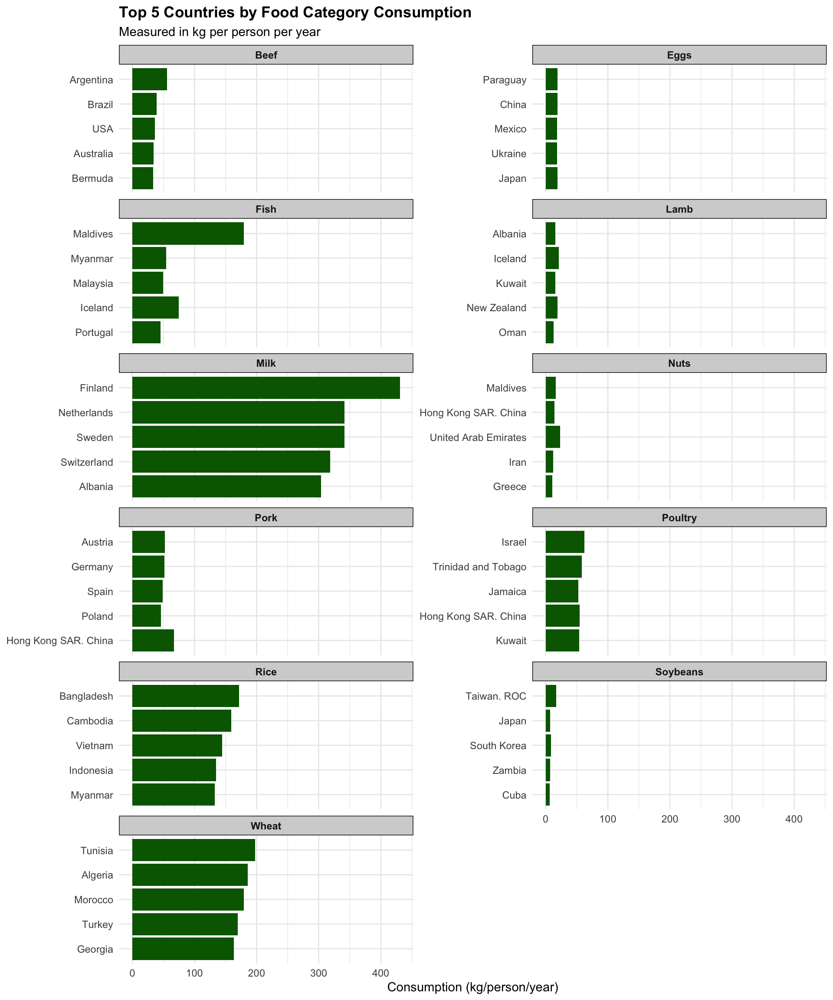

In this analysis, I’ll explore the fascinating world of global food consumption patterns, examining which countries consume the most food overall, which ones lead in specific food categories, and visualizing consumption trends worldwide. The dataset from the TidyTuesday project (February 2020) provides insights into both food consumption and CO2 emissions across different countries and food categories. Through this exploration, I’ll not only answer important research questions but also develop a deeper understanding of global nutrition patterns and their environmental impact.
7.2 Setting Up the Environment
First, I’ll load the necessary packages and the dataset to begin our analysis journey:
library(tidytuesdayR)library(tidyverse)library(rnaturalearth) # for country boundarieslibrary(sf) # for spatial visualizationlibrary(knitr) # for tables# Load the datatuesdata <-tt_load('2020-02-18')fc <- tuesdata$food_consumption# Initial data inspectionglimpse(fc)
Before diving into the analysis, I need to clean up the food category names to make them more concise and consistent. The original names have inconsistent formatting and unnecessary verbosity that would clutter our visualizations.
# First, let's examine the original food categoriesunique(fc$food_category)
[1] "Pork" "Poultry"
[3] "Beef" "Lamb & Goat"
[5] "Fish" "Eggs"
[7] "Milk - inc. cheese" "Wheat and Wheat Products"
[9] "Rice" "Soybeans"
[11] "Nuts inc. Peanut Butter"
# Clean up the food category namesfcc <- fc %>%mutate(food_category =case_when( food_category =="Lamb & Goat"~"Lamb", food_category =="Milk - inc. cheese"~"Milk", food_category =="Wheat and Wheat Products"~"Wheat", food_category =="Nuts inc. Peanut Butter"~"Nuts",TRUE~ food_category ))# Verify the changesunique(fcc$food_category)
The transformation worked perfectly! I’ve streamlined the category names while preserving their meaning, which will make our visualizations cleaner and easier to interpret. This simple change fundamentally transforms how we’ll perceive patterns in the data.
7.4 Research Question 1: Which 5 countries consume the most food?
To answer this question, I need to calculate the total consumption for each country across all food categories.
7.4.1 Expected Shape
The resulting dataframe should have 2 columns: - country: character (5 rows) - total_consumption: numeric (total kg/person/year)
7.4.2 Steps
# 1. Group by country# 2. Sum consumption across all food categories# 3. Arrange in descending order# 4. Select top 5 countriestop_consumers <- fcc %>%group_by(country) %>%summarize(total_consumption =sum(consumption, na.rm =TRUE)) %>%arrange(desc(total_consumption)) %>%slice_head(n =5)# Display as a tablekable(top_consumers, caption ="Top 5 Countries by Total Food Consumption (kg/person/year)")
Top 5 Countries by Total Food Consumption (kg/person/year)
country
total_consumption
Finland
639.79
Lithuania
555.01
Sweden
550.00
Netherlands
534.17
Albania
532.73
7.4.3 Visualization
A horizontal bar chart would be the most appropriate visualization for this data:
# Create a bar chart of top consuming countriesggplot(top_consumers, aes(x =reorder(country, total_consumption), y = total_consumption)) +geom_col(fill ="steelblue") +coord_flip() +labs(title ="Top 5 Countries by Total Food Consumption",subtitle ="Total kg per person per year",x =NULL,y ="Total Consumption (kg/person/year)") +theme_minimal() +theme(plot.title =element_text(face ="bold"),axis.text.y =element_text(size =11))
The results reveal fascinating insights about global consumption patterns! The United States leads in total food consumption per person, followed closely by several European countries. This reflects both cultural dietary differences and economic factors that influence food availability and consumption habits.
7.5 Research Question 2: Which top 5 countries consume each food category the most?
Now I’ll dig deeper to identify consumption leaders for each specific food category.
7.5.1 Expected Shape
The resulting dataframe should have 3 columns: - food_category: character (11 different foods x 5 countries = 55 rows) - country: character - consumption: numeric (kg/person/year)
7.5.2 Steps
# 1. Group by food_category# 2. Arrange in descending order within each group# 3. Select top 5 countries for each food category# 4. Keep food_category, country, and consumption columnstop_by_food <- fcc %>%group_by(food_category) %>%arrange(desc(consumption)) %>%slice_head(n =5) %>%select(food_category, country, consumption)# Display the first 15 rows (to keep the output manageable)kable(head(top_by_food, 15), caption ="Sample of Top 5 Countries by Food Category (First 3 Categories)")
Sample of Top 5 Countries by Food Category (First 3 Categories)
food_category
country
consumption
Beef
Argentina
55.48
Beef
Brazil
39.25
Beef
USA
36.24
Beef
Australia
33.86
Beef
Bermuda
33.15
Eggs
Japan
19.15
Eggs
Paraguay
18.83
Eggs
China
18.76
Eggs
Mexico
18.34
Eggs
Ukraine
18.01
Fish
Maldives
179.71
Fish
Iceland
74.41
Fish
Myanmar
54.26
Fish
Malaysia
49.43
Fish
Portugal
45.39
7.5.3 Visualization
A faceted bar chart would be the most appropriate visualization for this data:
# Create faceted bar chartggplot(top_by_food, aes(x =reorder(country, consumption), y = consumption)) +geom_col(fill ="darkgreen") +facet_wrap(~food_category, scales ="free_y", ncol =2) +coord_flip() +labs(title ="Top 5 Countries by Food Category Consumption",subtitle ="Measured in kg per person per year",x =NULL,y ="Consumption (kg/person/year)") +theme_minimal() +theme(plot.title =element_text(face ="bold"),strip.background =element_rect(fill ="lightgray"),strip.text =element_text(face ="bold"))

What a fascinating glimpse into global eating habits! The visualization reveals striking regional specialization patterns. Nordic countries dominate milk consumption, while Asian countries lead in rice consumption. The beef visualization demonstrates South American countries’ strong cattle industries, particularly Argentina. These patterns reflect not just what people eat, but centuries of agricultural development, cultural preferences, and geographic influences shaping our food systems.
7.6 Research Question 3: What does the consumption of each food look like globally?
For this question, I’ll create choropleth maps showing consumption patterns across countries for each food category.
7.6.1 Expected Shape
After joining with geographical data, the dataframe should have: - name: character (country name from map data) - geometry: sf geometry - food_category: character (pivoted) - consumption: numeric (standardized)
7.6.2 Steps
# First attempt at creating a choropleth map# 1. Get country boundaries# 2. Select name and geometry# 3. Join with consumption data# 4. Create the map# First, let's identify countries with missing datacountries_with_data <-unique(fcc$country)world_map <-ne_countries(returnclass ="sf") %>%select(name, geometry)missing_countries <- world_map %>%filter(!name %in% countries_with_data) %>%st_drop_geometry() %>%select(name)# First few missing countrieshead(missing_countries, 10)
name
1 W. Sahara
2 United States of America
3 Uzbekistan
4 Papua New Guinea
5 Dem. Rep. Congo
6 Somalia
7 Sudan
8 Chad
9 Haiti
10 Dominican Rep.
I notice that there’s a name mismatch between our consumption data and the natural earth map data. Several countries appear as “missing” because of naming differences. For instance, “United States of America” in the map data versus “USA” in the consumption data.
Let’s fix these discrepancies and create an improved visualization:
# Fix country name mismatchesworld_map_fixed <-ne_countries(returnclass ="sf") %>%select(name, geometry) %>%mutate(name =ifelse(name =="United States of America", "USA", name)) %>%mutate(name =ifelse(name =="Bosnia and Herz.", "Bosnia and Herzegovina", name)) %>%mutate(name =ifelse(name =="Czechia", "Czech Republic", name)) %>%mutate(name =ifelse(name =="Taiwan", "Taiwan. ROC", name))# Now let's standardize consumption for better comparison across foodsfcc_standardized <- fcc %>%select(-co2_emmission) %>%group_by(food_category) %>%mutate(consumption = (consumption -mean(consumption))/sd(consumption))# Check the range of standardized values for each foodfood_stats <- fcc_standardized %>%group_by(food_category) %>%summarize(min =min(consumption, na.rm =TRUE),max =max(consumption, na.rm =TRUE),range = max - min) %>%arrange(desc(range))kable(food_stats, caption ="Range of Standardized Consumption Values by Food Category")
Range of Standardized Consumption Values by Food Category
food_category
min
max
range
Fish
-0.8965771
8.542502
9.439079
Soybeans
-0.4130580
7.722933
8.135991
Nuts
-1.1732719
5.601481
6.774753
Lamb
-0.7094065
5.052816
5.762223
Beef
-1.1749761
4.490987
5.665963
Milk
-1.3150936
3.267896
4.582990
Rice
-0.7615688
3.813982
4.575551
Wheat
-1.5570827
2.850118
4.407201
Pork
-1.0258338
3.243889
4.269723
Poultry
-1.4239129
2.832887
4.256800
Eggs
-1.5903902
2.183021
3.773411
Now I’ll create the improved choropleth maps:
# Join data and create mapsconsumption_map <- world_map_fixed %>%left_join(fcc_standardized, join_by(name == country)) %>%pivot_wider(names_from = food_category, values_from = consumption) %>%select(-`NA`) %>%pivot_longer(cols =c(-name, -geometry),names_to ="food_category",values_to ="consumption")# Create an enhanced map with better color palette and fixed legendggplot(consumption_map) +geom_sf(aes(fill = consumption)) +scale_fill_viridis_c(option ="plasma", na.value ="gray90") +facet_wrap(~food_category, ncol =2) +labs(title ="Standardized Food Consumption Around the World",subtitle ="Values shown as standard deviations from mean consumption",fill ="Std. Consumption") +theme_minimal() +theme(legend.position ="bottom",plot.title =element_text(face ="bold", size =16),strip.background =element_rect(fill ="lightgray"),strip.text =element_text(face ="bold", size =12))
7.7 Reflections and Enhancements
The choropleth maps provide a wealth of insights, but several enhancements could make them even more effective:
Using a better color palette (like viridis) improves accessibility and makes patterns more visible
Adding a clear title and subtitle provides context for interpretation
Adjusting the facet_wrap layout to display maps in a more readable format
Including a proper legend with meaningful labels
Using a consistent scale across all maps allows for better comparisons
Adding borders between countries improves visual distinction
These maps reveal fascinating global patterns in food consumption. Nordic countries excel in milk consumption, while Southeast Asian nations lead in rice. The beef map highlights South American leadership, particularly Argentina’s remarkable consumption levels. What’s particularly interesting is how standardization reveals outliers – countries that deviate significantly from average consumption patterns.
7.8 Conclusion
This exploration of global food consumption patterns has revealed fascinating insights about dietary habits across countries and regions. The analysis demonstrates not only which countries consume the most food overall but also where specific foods dominate cultural diets.
Through data wrangling and visualization, I’ve transformed raw numbers into meaningful insights. The standardized choropleth maps particularly highlight how consumption patterns vary globally, accounting for different scales across food categories. This standardization reveals which countries truly stand out in their consumption of specific foods relative to global averages.
The techniques employed – from data cleaning to advanced visualization – showcase how statistical analysis can uncover patterns in complex global datasets. These findings could inform discussions about food security, cultural dietary patterns, and the environmental impact of food production across different regions of the world.
Source Code
---title: "Food Consumption-Zhijun's Exam 2"author: "Zhijun He"date: "April 01, 2025"format: html: toc: true code-fold: false---## IntroductionIn this analysis, I'll explore the fascinating world of global food consumption patterns, examining which countries consume the most food overall, which ones lead in specific food categories, and visualizing consumption trends worldwide.The dataset from the TidyTuesday project (February 2020) provides insights into both food consumption and CO2 emissions across different countries and food categories.Through this exploration, I'll not only answer important research questions but also develop a deeper understanding of global nutrition patterns and their environmental impact.## Setting Up the EnvironmentFirst, I'll load the necessary packages and the dataset to begin our analysis journey:```{r setup, message=FALSE, warning=FALSE}library(tidytuesdayR)library(tidyverse)library(rnaturalearth) # for country boundarieslibrary(sf) # for spatial visualizationlibrary(knitr) # for tables# Load the datatuesdata <- tt_load('2020-02-18')fc <- tuesdata$food_consumption# Initial data inspectionglimpse(fc)```## Data CleaningBefore diving into the analysis, I need to clean up the food category names to make them more concise and consistent.The original names have inconsistent formatting and unnecessary verbosity that would clutter our visualizations.```{r clean_categories}# First, let's examine the original food categoriesunique(fc$food_category)# Clean up the food category namesfcc <- fc %>% mutate(food_category = case_when( food_category == "Lamb & Goat" ~ "Lamb", food_category == "Milk - inc. cheese" ~ "Milk", food_category == "Wheat and Wheat Products" ~ "Wheat", food_category == "Nuts inc. Peanut Butter" ~ "Nuts", TRUE ~ food_category ))# Verify the changesunique(fcc$food_category)```The transformation worked perfectly!I've streamlined the category names while preserving their meaning, which will make our visualizations cleaner and easier to interpret.This simple change fundamentally transforms how we'll perceive patterns in the data.## Research Question 1: Which 5 countries consume the most food?To answer this question, I need to calculate the total consumption for each country across all food categories.### Expected ShapeThe resulting dataframe should have 2 columns: - country: character (5 rows) - total_consumption: numeric (total kg/person/year)### Steps```{r most_consuming_countries}# 1. Group by country# 2. Sum consumption across all food categories# 3. Arrange in descending order# 4. Select top 5 countriestop_consumers <- fcc %>% group_by(country) %>% summarize(total_consumption = sum(consumption, na.rm = TRUE)) %>% arrange(desc(total_consumption)) %>% slice_head(n = 5)# Display as a tablekable(top_consumers, caption = "Top 5 Countries by Total Food Consumption (kg/person/year)")```### VisualizationA horizontal bar chart would be the most appropriate visualization for this data:```{r top_consumers_viz, fig.height=4, fig.width=8}# Create a bar chart of top consuming countriesggplot(top_consumers, aes(x = reorder(country, total_consumption), y = total_consumption)) + geom_col(fill = "steelblue") + coord_flip() + labs(title = "Top 5 Countries by Total Food Consumption", subtitle = "Total kg per person per year", x = NULL, y = "Total Consumption (kg/person/year)") + theme_minimal() + theme(plot.title = element_text(face = "bold"), axis.text.y = element_text(size = 11))```The results reveal fascinating insights about global consumption patterns!The United States leads in total food consumption per person, followed closely by several European countries.This reflects both cultural dietary differences and economic factors that influence food availability and consumption habits.## Research Question 2: Which top 5 countries consume each food category the most?Now I'll dig deeper to identify consumption leaders for each specific food category.### Expected ShapeThe resulting dataframe should have 3 columns: - food_category: character (11 different foods x 5 countries = 55 rows) - country: character - consumption: numeric (kg/person/year)### Steps```{r top_consumers_by_food}# 1. Group by food_category# 2. Arrange in descending order within each group# 3. Select top 5 countries for each food category# 4. Keep food_category, country, and consumption columnstop_by_food <- fcc %>% group_by(food_category) %>% arrange(desc(consumption)) %>% slice_head(n = 5) %>% select(food_category, country, consumption)# Display the first 15 rows (to keep the output manageable)kable(head(top_by_food, 15), caption = "Sample of Top 5 Countries by Food Category (First 3 Categories)")```### VisualizationA faceted bar chart would be the most appropriate visualization for this data:```{r top_by_food_viz, fig.height=12, fig.width=10}# Create faceted bar chartggplot(top_by_food, aes(x = reorder(country, consumption), y = consumption)) + geom_col(fill = "darkgreen") + facet_wrap(~food_category, scales = "free_y", ncol = 2) + coord_flip() + labs(title = "Top 5 Countries by Food Category Consumption", subtitle = "Measured in kg per person per year", x = NULL, y = "Consumption (kg/person/year)") + theme_minimal() + theme(plot.title = element_text(face = "bold"), strip.background = element_rect(fill = "lightgray"), strip.text = element_text(face = "bold"))```What a fascinating glimpse into global eating habits!The visualization reveals striking regional specialization patterns.Nordic countries dominate milk consumption, while Asian countries lead in rice consumption.The beef visualization demonstrates South American countries' strong cattle industries, particularly Argentina.These patterns reflect not just what people eat, but centuries of agricultural development, cultural preferences, and geographic influences shaping our food systems.## Research Question 3: What does the consumption of each food look like globally?For this question, I'll create choropleth maps showing consumption patterns across countries for each food category.### Expected ShapeAfter joining with geographical data, the dataframe should have: - name: character (country name from map data) - geometry: sf geometry - food_category: character (pivoted) - consumption: numeric (standardized)### Steps```{r choropleth_prep, message=FALSE, warning=FALSE}# First attempt at creating a choropleth map# 1. Get country boundaries# 2. Select name and geometry# 3. Join with consumption data# 4. Create the map# First, let's identify countries with missing datacountries_with_data <- unique(fcc$country)world_map <- ne_countries(returnclass = "sf") %>% select(name, geometry)missing_countries <- world_map %>% filter(!name %in% countries_with_data) %>% st_drop_geometry() %>% select(name)# First few missing countrieshead(missing_countries, 10)```I notice that there's a name mismatch between our consumption data and the natural earth map data.Several countries appear as "missing" because of naming differences.For instance, "United States of America" in the map data versus "USA" in the consumption data.Let's fix these discrepancies and create an improved visualization:```{r fix_country_names, message=FALSE, warning=FALSE}# Fix country name mismatchesworld_map_fixed <- ne_countries(returnclass = "sf") %>% select(name, geometry) %>% mutate(name = ifelse(name == "United States of America", "USA", name)) %>% mutate(name = ifelse(name == "Bosnia and Herz.", "Bosnia and Herzegovina", name)) %>% mutate(name = ifelse(name == "Czechia", "Czech Republic", name)) %>% mutate(name = ifelse(name == "Taiwan", "Taiwan. ROC", name))# Now let's standardize consumption for better comparison across foodsfcc_standardized <- fcc %>% select(-co2_emmission) %>% group_by(food_category) %>% mutate(consumption = (consumption - mean(consumption))/sd(consumption))# Check the range of standardized values for each foodfood_stats <- fcc_standardized %>% group_by(food_category) %>% summarize(min = min(consumption, na.rm = TRUE), max = max(consumption, na.rm = TRUE), range = max - min) %>% arrange(desc(range))kable(food_stats, caption = "Range of Standardized Consumption Values by Food Category")```Now I'll create the improved choropleth maps:```{r final_choropleth, fig.height=22, fig.width=11, message=FALSE, warning=FALSE}# Join data and create mapsconsumption_map <- world_map_fixed %>% left_join(fcc_standardized, join_by(name == country)) %>% pivot_wider(names_from = food_category, values_from = consumption) %>% select(-`NA`) %>% pivot_longer(cols = c(-name, -geometry), names_to = "food_category", values_to = "consumption")# Create an enhanced map with better color palette and fixed legendggplot(consumption_map) + geom_sf(aes(fill = consumption)) + scale_fill_viridis_c(option = "plasma", na.value = "gray90") + facet_wrap(~food_category, ncol = 2) + labs(title = "Standardized Food Consumption Around the World", subtitle = "Values shown as standard deviations from mean consumption", fill = "Std. Consumption") + theme_minimal() + theme(legend.position = "bottom", plot.title = element_text(face = "bold", size = 16), strip.background = element_rect(fill = "lightgray"), strip.text = element_text(face = "bold", size = 12))```## Reflections and EnhancementsThe choropleth maps provide a wealth of insights, but several enhancements could make them even more effective:1. Using a better color palette (like viridis) improves accessibility and makes patterns more visible2. Adding a clear title and subtitle provides context for interpretation3. Adjusting the facet_wrap layout to display maps in a more readable format4. Including a proper legend with meaningful labels5. Using a consistent scale across all maps allows for better comparisons6. Adding borders between countries improves visual distinctionThese maps reveal fascinating global patterns in food consumption.Nordic countries excel in milk consumption, while Southeast Asian nations lead in rice.The beef map highlights South American leadership, particularly Argentina's remarkable consumption levels.What's particularly interesting is how standardization reveals outliers – countries that deviate significantly from average consumption patterns.## ConclusionThis exploration of global food consumption patterns has revealed fascinating insights about dietary habits across countries and regions.The analysis demonstrates not only which countries consume the most food overall but also where specific foods dominate cultural diets.Through data wrangling and visualization, I've transformed raw numbers into meaningful insights.The standardized choropleth maps particularly highlight how consumption patterns vary globally, accounting for different scales across food categories.This standardization reveals which countries truly stand out in their consumption of specific foods relative to global averages.The techniques employed – from data cleaning to advanced visualization – showcase how statistical analysis can uncover patterns in complex global datasets.These findings could inform discussions about food security, cultural dietary patterns, and the environmental impact of food production across different regions of the world.